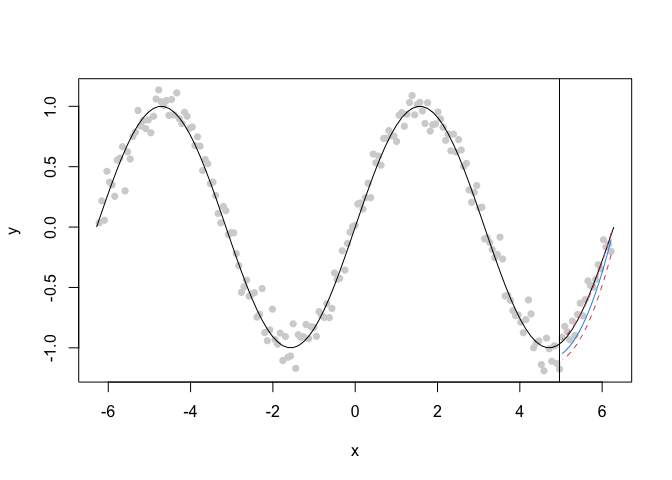

This package estimates multi-reponse quantile regression in the context that the resulting predictions should be “smooth”. The typical use case would be multi-horizon time-series forecasting wherein we believe that the responses should vary smoothly.
See the related pre-print: https://arxiv.org/abs/2202.09723
Installation
You can install the development version of smoothqr from GitHub with:
# install.packages("remotes")
remotes::install_github("dajmcdon/smoothqr")Example
This is a basic example.
library(smoothqr)
x <- -99:99 / 100 * 2 * pi
y <- sin(x) + rnorm(length(x), sd = .1)
XY <- lagmat(y[1:(length(y) - 20)], c(-20:20))
Y <- XY[ ,1:20]
X <- XY[ ,21:ncol(XY)]
tt <- smooth_qr(X, Y, c(.2, .5, .8), aheads = 20:1)
pl <- predict(tt, newdata = X[max(which(complete.cases(X))), , drop = FALSE])
pll <- dplyr::bind_rows(lapply(pl, tibble::as_tibble),
.id = "ahead")
plot(x, y, pch = 16, col = "lightgrey")
curve(sin(x), from = -2 * pi, to = 2 * pi, add = TRUE)
abline(v = x[length(y) - 20])
pll$x <- rev(x[length(y) - 19:0])
lines(pll$x, pll$`tau = 0.5`, col = 4)
lines(pll$x, pll$`tau = 0.2`, col = 2, lty = 2)
lines(pll$x, pll$`tau = 0.8`, col = 2, lty = 2)